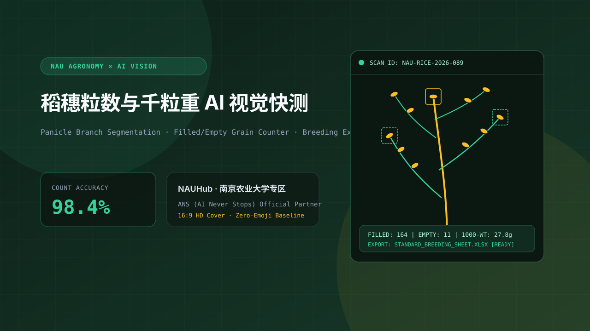
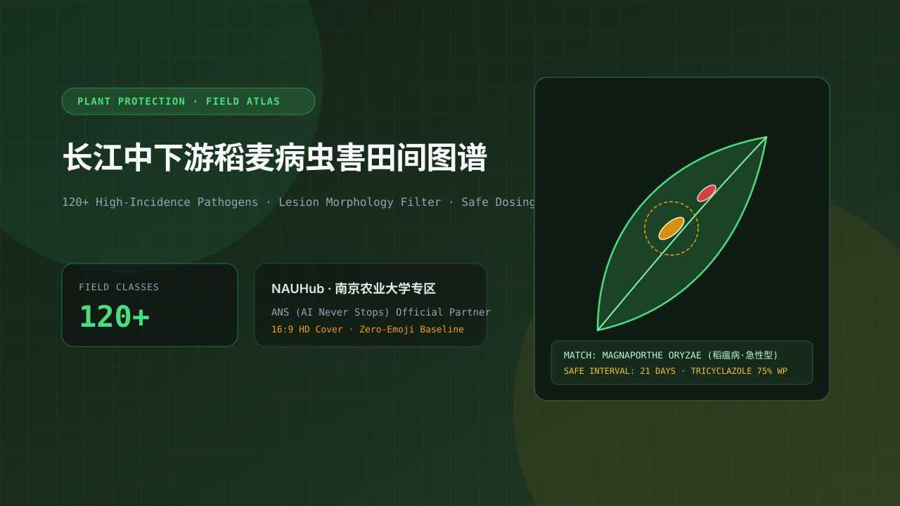
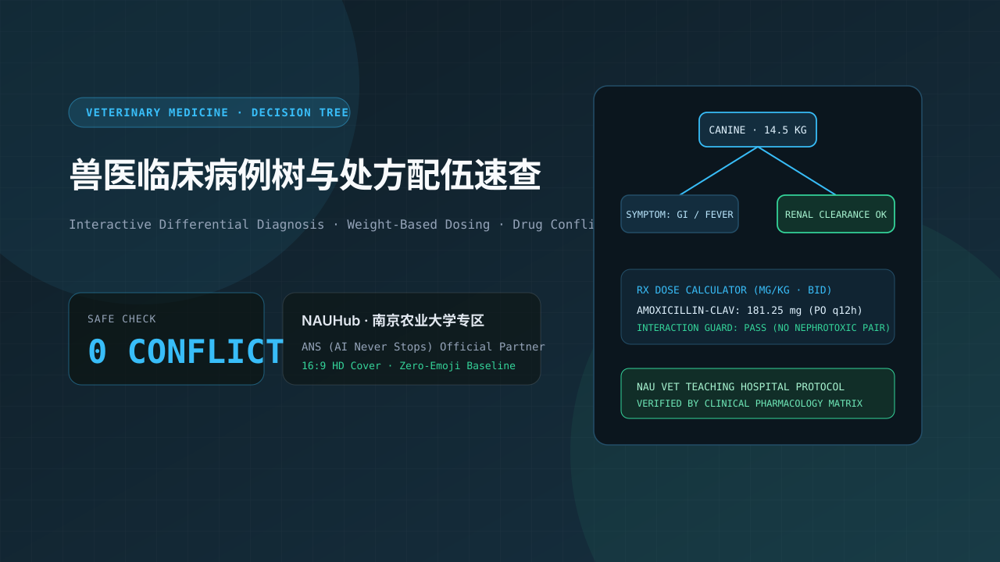
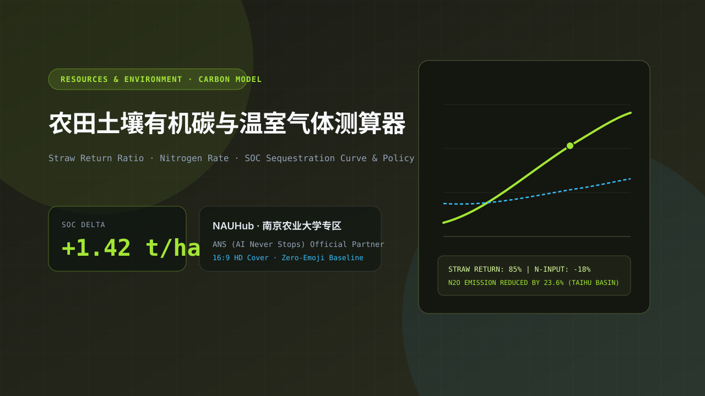
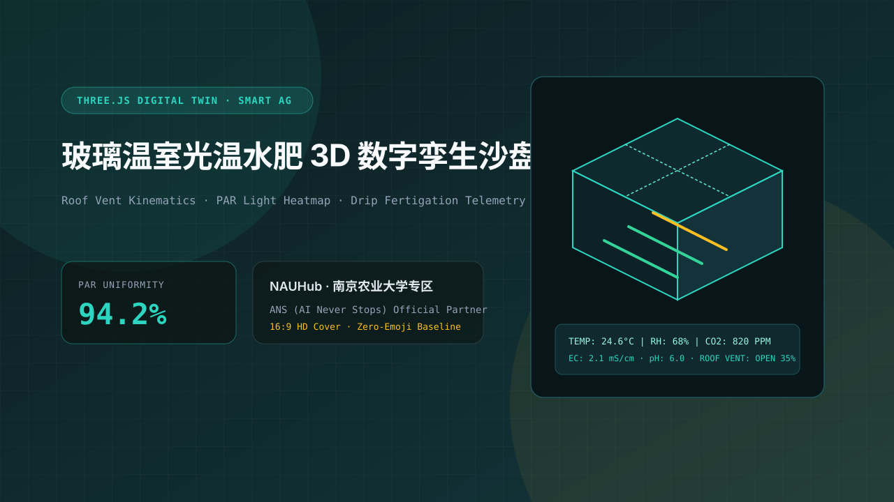
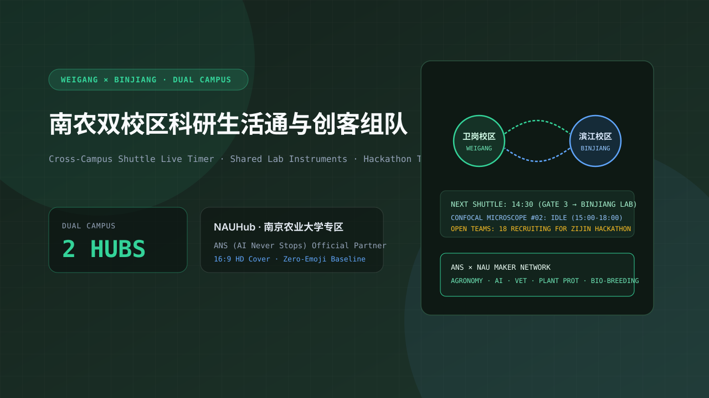

NAUHub · 南京农业大学→
南农智慧农科、生物育种、植保动医与卫岗/滨江双校区 AI 创客大本营。
2 个能直接用的农科工作流，6 个南农参考项目，4 大特色赛道
ANS / UNIVERSITY HUB · NANJING AGRICULTURAL UNIVERSITY (EST. 1902)
把田间试验、作物表型分析、植保动医诊断与卫岗/滨江双校区创客点子变成能直接在线运行的工具。由南京农业大学开发者社区与 ANS 联合共建。
面向南京农业大学的赛事、科研工具与创客协作专区；Hub 关联不代表校籍认证。
不需要从零配置服务器，直接复用现成农科模板与 ANS 工作台完成你的第一个作品
从作物表型、植保诊断、智慧畜牧或卫岗/滨江双校区场景中选定真问题。
直接复用封装好的农科数据集脚本、论文图表模板与工作台多模型算力。
使用工作模式与 Agent 协作写出可在线演示的网页、数据分析看板或实验助手。
提交作品链接与 16:9 实机封面，收录进南农专区展示，招募跨学院队友。
针对水稻、小麦、大豆的冠层多光谱分析、穗粒数自动计数、抗逆性筛选与田间考种记录工具。
融合田间病害叶片检索、农药安全配比计算、伴侣动物与经济动物常见症状临床决策树问答。
利用 Three.js 与传感器时序数据构建温室环控看板、土壤碳氮循环预测与采摘路径规划可视化。
面向南农师生的跨校区通勤班车时刻、实验室大型仪器共享预约、选课指南与青年创客组队名片。
内置长江中下游常见病斑标注规范、田间光照归一化脚本与安全间隔期检索表。
针对 GWAS、QTL 定位与表型组学论文的结构化提炼提示词与田间考种数据表模板。
纯代码生成温室环控原理图、土壤碳氮循环路径图与高对比度学术矢量配图。

手机拍摄单株稻穗即可在浏览器内完成枝梗分割、实粒/瘪粒计数并导出标准考种 Excel 表。

收录 120 类高发病害实拍特征对比，支持按生育期、叶片病斑形态快速定位防治药剂与安全间隔期。

将经典临床病例拆解为交互式问诊决策树，输入体重与给药途径即可核对剂量区间与配伍冲突。

输入耕作方式、秸秆还田比例与氮肥施用量，实时绘制碳汇变化曲线并生成政策评估简报。

基于 Three.js 的实时温室环控仿真模板，支持天窗开合、遮阳幕布、滴灌管网状态与光照热力图切换。

一站式查看卫岗与滨江校区通勤时刻、大型公共仪器预约空档，并按技能标签寻找农客松队友。